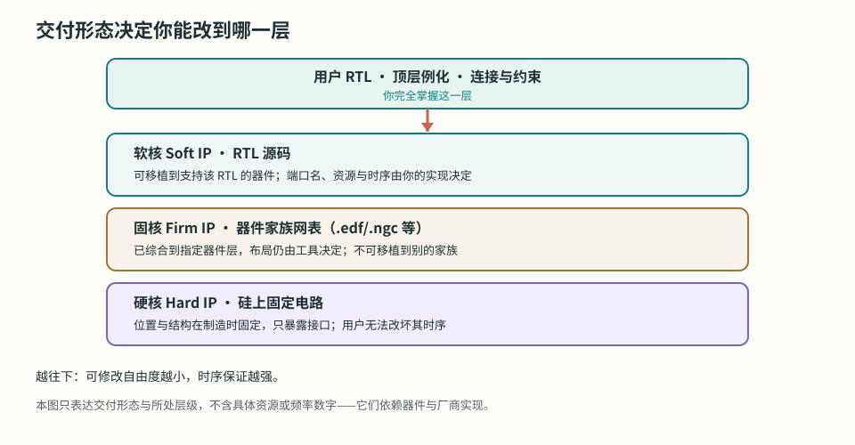

常用 IP 核集成：从交付形态到顶层例化
现代 FPGA 设计里，自己写的 RTL 往往只是系统的一小部分，其余由时钟、FIFO、存储、总线等 IP 核构成。理解 IP 的配置语义与边界，比会点“生成”按钮重要得多。
01 / IP 核是什么：三类交付形态
IP 核（Intellectual Property Core）是预先设计、经过验证的数字模块，你可以把它例化进自己的设计，而不必从零写 RTL。它最常见的分类依据不是功能，而是交付形态——这决定了它能不能移植、能不能改、以及时序由谁保证。
| 形态 | 交付内容 | 可移植性 | 时序由谁保证 |
|---|---|---|---|
| 硬核 Hard IP | 芯片制造阶段就固定了物理位置的电路 | 不可移植（绑定具体器件与位置） | 硅验证，用户无法改坏 |
| 软核 Soft IP | RTL 源码（Verilog/VHDL） | 可移植到支持该 RTL 的器件 | 由用户实现后的时序报告决定 |
| 固核 Firm IP | 已综合到特定器件层的网表 | 只能在指定器件家族使用 | 由网表与实现决定 |

我们在前几章自己写的 UART、SPI 模块，就是一份自研软 IP——它同样遵循“接口 + 时序 + 验证”的契约，只是作者是自己。IP Catalog 里大多数常用 IP（FIFO、Clocking Wizard、AXI GPIO）都是软核，它们最终会被综合成器件上的查找表与寄存器。
02 / 时钟管理 IP：频率关系式与边界
开发板上的晶振通常只有一个固定频率，而设计可能需要多个不同频率：处理器核、DDR 接口、外设串口往往各自需要自己的时钟。FPGA 用专门的时钟管理单元把这些频率“造”出来——AMD 7 系列及以后器件里是 MMCM，Intel/Altera 器件里是 PLL。在 Vivado IP Catalog 中搜索 “Clocking Wizard”，在 Quartus 中使用 “ALTPLL”。
它本质是一个带反馈环的锁相/混合模式时钟单元：输入参考时钟与反馈时钟在鉴相器里比较，通过可编程的乘/除系数把输出频率合成出来。所以输出频率是一个有理数关系，而不是任意实数：
Fout = Fin × M / (D × O)其中 M 是倍频系数，D 是输入分频，O 是输出分频。三者取值范围都由工具与器件决定；同一个目标频率往往有多种 (M, D, O) 组合，工具会选一组并检查 VCO 频率是否落在器件允许区间。理解这个关系式，能解释“为什么某些频率配不出来”——因为它们无法拆成可用的有理数组合，而不是工具“不听话”。这正是 AMD UG472 对 MMCM/PLL 所定义的关系（见文末来源）。
03 / FIFO：接口、首字预现与深度
FIFO（First-In First-Out）是 FPGA 里最常用的数据缓冲结构，用来吸收生产者与消费者之间的速率差或突发差。Vivado 的 FIFO Generator 提供两种接口风格：
- Native 接口：写使能 + 数据总线 + 满/空标志，读使能 + 读数据。
- AXI4-Stream 接口：
tvalid/tready/tdata/tkeep等信号，适合与其它 AXI-Stream IP 对接。
一个很容易用错的选项是首字预现（First-Word Fall-Through）。标准同步 FIFO 下，读使能有效后数据要等一个时钟周期才出现在 dout 上，你需要把下一拍的读使能与采样对齐；而首字预现模式下，只要 FIFO 非空，第一个数据就已经摆在 dout 上，可以直接采样。两者对读延时的约定不同，因此消费者 RTL 的读时机必须与之匹配，否则会少读或多读一个数。
当读、写时钟不同时，FIFO Generator 会在内部例化跨时钟域同步逻辑（典型是格雷码双向指针的 2–3 级同步），这是它在异步场景下可直接使用的前提，也意味着你不应该再自己把它的指针信号逐位同步。异步 FIFO 的两个核心参数是读时钟频率与写时钟频率，工具据此选择同步器级数。
04 / 存储 IP：端口与读写模式语义
Block Memory Generator 例化器件内部的 Block RAM。选型的第一件事不是容量，而是端口配置，因为端口数决定了能否真正同时读写：
| 配置 | 端口能力 | 典型用途 |
|---|---|---|
| 单端口 | 一个端口分时复用读/写 | 简单缓冲，读写不同时发生 |
| 简单双端口 | 一个只写端口 + 一个只读端口 | 写控制器写入、读控制器读出；可用不同时钟 |
| 真双端口 | 两个端口各自可独立读写 | 两路独立访问同一块存储 |
第二件事是同拍读写的语义。当某个端口在同一时钟沿同时被读和被写时，输出行为由操作模式决定：读优先（Read First）输出该地址上的旧数据，写优先（Write First）输出刚写入的新数据，不变模式（No Change）读输出保持不变。第 11 章的 ram_sp_read_first.v 就是“单时钟、同端口 READ_FIRST”语义的最小例子——它只验证了这一个语义，不能据此推论跨端口或跨时钟的碰撞行为。
若要做 ROM 或需要初始内容的 RAM，可在生成时提供初始化文件（Vivado 中使用 COE 文件，文本形式）或直接填入初始值；初始化内容会随比特流一起配置到器件中。
05 / 标志位：满、空与阈值
FIFO 的可靠性不只在于深度，还在于你是否把标志位接到控制逻辑上。常用标志：
full/empty：严格边界。写满时继续写会被丢弃（溢出），空时继续读会读出无意义数据（下溢）。almost_full/almost_empty：阈值提前告警，让你有提前量去节流，而不是撞边界。wr_rst_busy/rd_rst_busy：复位后的内部初始化状态，忙时不应发读写请求。overflow/underflow：发生后会被锁存，方便定位。它们在生成时可选择是否启用。
深度该怎么定？一个可复现的最小验算（以下数字均为教学示意）：设生产者每拍写 1 字、连续写 B 字，消费者在生产者开始后延迟 S 拍才开始读、之后每拍读 1 字。在消费者开始读之前，FIFO 已经积累了 S 字（当 S ≤ B），因此峰值占用量约为 S。若 B = 20、S = 20，则需要容量至少 20 字。取下一个二的幂 32 作为深度，既满足约束又匹配 Block RAM 的地址对齐。这个式子把“差不多够用”换成了可列条件：深度 ≥ 峰值未消费量。
反过来，参数改变结论也会变：如果消费者在延迟期间完全停止读（而不是每拍读），峰值占用就是 B 而非 S。所以“深度取多少”没有通用答案，必须根据生产/消费的最差时序算出。
06 / 顶层例化：PLL + FIFO + BRAM
在 Vivado 里集成 IP 有两条路：手写顶层例化，或用 IP Integrator 的 Block Design。先看手写例化——它把每个 IP 当成一个模块，端口名就是生成时报告里的接口名：
// 例化 PLL：100 MHz 输入 → 200 MHz 输出。模块名/端口名来自生成时报告。
// 注意：真实的 clk_wiz 端口名为 clk_out1/locked/clk_in1，此处只展示连接方式。
module top (
input wire clk_100m,
input wire rst_n,
input wire [7:0] adc_data,
input wire adc_valid,
output wire [7:0] data_out
);
wire clk_200m;
wire pll_locked;
wire fifo_full, fifo_empty, fifo_rd_en;
wire [7:0] fifo_dout;
clk_wiz_0 u_pll (
.clk_in1 (clk_100m),
.clk_out1 (clk_200m),
.locked (pll_locked)
);
// 复位同步：内部用两级寄存器对 rst_n 做同步，避免复位释放与时钟沿竞态。
// 这里电平在时钟域内对齐；FIFO 另有自己的内部初始化握手（见 wr_rst_busy）。
reg [1:0] rst_sync = 2'b0;
always @(posedge clk_200m) begin
if (!rst_n) rst_sync <= 2'b0;
else rst_sync <= {rst_sync[0], 1'b1};
end
// 异步 FIFO：写侧 100 MHz，读侧 200 MHz。
fifo_generator_0 u_fifo (
.wr_clk (clk_100m),
.rd_clk (clk_200m),
.rst (rst_sync[1] | ~pll_locked), // 未锁定或复位期间保持复位
.din (adc_data),
.wr_en (adc_valid && !fifo_full),
.rd_en (fifo_rd_en),
.dout (fifo_dout),
.full (fifo_full),
.empty (fifo_empty)
);
// 读侧逻辑与 BRAM 写入略；关键是：读使能必须在非空时才能拉高。
assign data_out = fifo_dout;
endmodule两个易错点：一是端口名必须与生成报告一致（不同版本或不同配置下可能不同），照抄旧代码很容易编译不过；二是复位要用 IP 要求的同步释放，直接把按键复位接到异步 FIFO 的 rst 上，可能在内部初始化未完成时就收发数据。
07 / 使用 IP 的边界与可验证条件
用 IP 核能省下大量 RTL，但它把一部分正确性责任转移给了配置与工具。以下几点是本章想强调的边界：
- IP 的“默认配置”不是为你设计的。 FIFO 默认深度、默认接口、默认标志位都可能与实际需求不符——上一节的深度验算就是为了把“默认”换成“算出来”。
- 硬件资源占用不能从 IP 名称推断。 同一个 IP 在不同器件、不同配置下资源差异很大；要得到可靠数字，只能看具体实现报告。
- 跨时钟域由 IP 内部处理，不等于整个系统都安全。 如果自己把异步信号或多位总线绕开 FIFO 直接使用，仍然需要第 13 章手写的同步或握手方案。
- 工具版本会影响结果。 IP 版本不同，生成的 RTL、端口名、时序都可能变；要可复现，就得把 IP 配置文件（如
.xci）纳入版本控制，并记录工具版本（见第 18 章）。
思考练习：为什么“CDC 已由 IP 内部处理”不能推出整个系统都没有跨时钟域风险？
IP 只保证它自己内部的跨时钟域路径有定义。一旦你在 IP 之外把异步信号或多位总线绕开 FIFO 直接引入自己的逻辑，就产生了新的、IP 不会替你约束的跨域路径。判定标准是整条数据路径的起点与终点位于哪个时钟域，而不是“中间经过了一个 IP”。参见第 13 章：多 bit 总线不能靠逐位同步，需要握手或异步 FIFO。